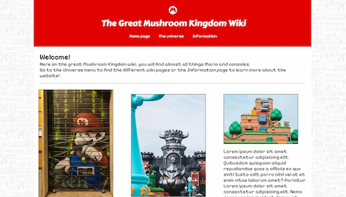

Portfolio
Links til alle opgaver lavet på 1. semester!
Dette er min portfolio for alle hoved-opgaver der er blevet lavet gennem 1. semester. For at komme ind og læse om de forskellige sites skal i blot klikke på billedet!
Tema 3 - Grundlæggende UX/UI
04.04.01 - temaopgave (Tema 4)

I dette tema skulle vi, med hjælp af css-animation og Javascript, designe et simpelt spil. Den
første halvanden uge af temaet fik vi en kort introduktion til både css-animation og Javascript, og
herefter blev vi sat igang med opgaven.
Da jeg ikke nåede at blive færdig med hoved-opgaven, grundet udfordringer i nærheden af
slutningen af temaet, har jeg her linket én af de Javascript-øvelser som vi lavede. Den består af 4
sider som hver spiller en animation med to smileyer.
05.01.01 - videosite (Tema 5)

I denne opgave skulle vi ud og interviewe en person med en passion, og derefter lave et site udfra det. Mig og min studiekammerat var ude og interviewe én af hendes kammerater, som har en kæmpe passion inde for et computer-spil der hedder Final Fantasy 14. Efter vi havde ude og interviewe, gik opgaven fra et gruppeprojekt til en individuel opgave. Her skulle vi redigere det video-materiale vi havde fået fra optagelsesdagen i Premiere Pro, og derefter ligge det færdige resultat op i to formater på et site, som vi skulle lave ved siden af videoen.
05.02.01 - virksomhedssite (Tema 5)

I denne opgave skulle vi redesigne en selvvalgt virksomhed's website. Mig og min gruppe valgte Mellemamerika Komitéen, som er en NGO som ét af mine gruppe-medlemmer var frivillig for. Det jeg primært stod for i denne opgave var kodningen, da jeg ikke var ret meget over design/planlægnings-delen af opgaven. I kodnings-delen påtog jeg mig ansvaret for vores GitHub-repository, samt vores fælles css-fil (udover de to css-filer til de to sider på sitet som jeg stod for). De to sider jeg lavede til sitet var Om MAK og Nyheder.